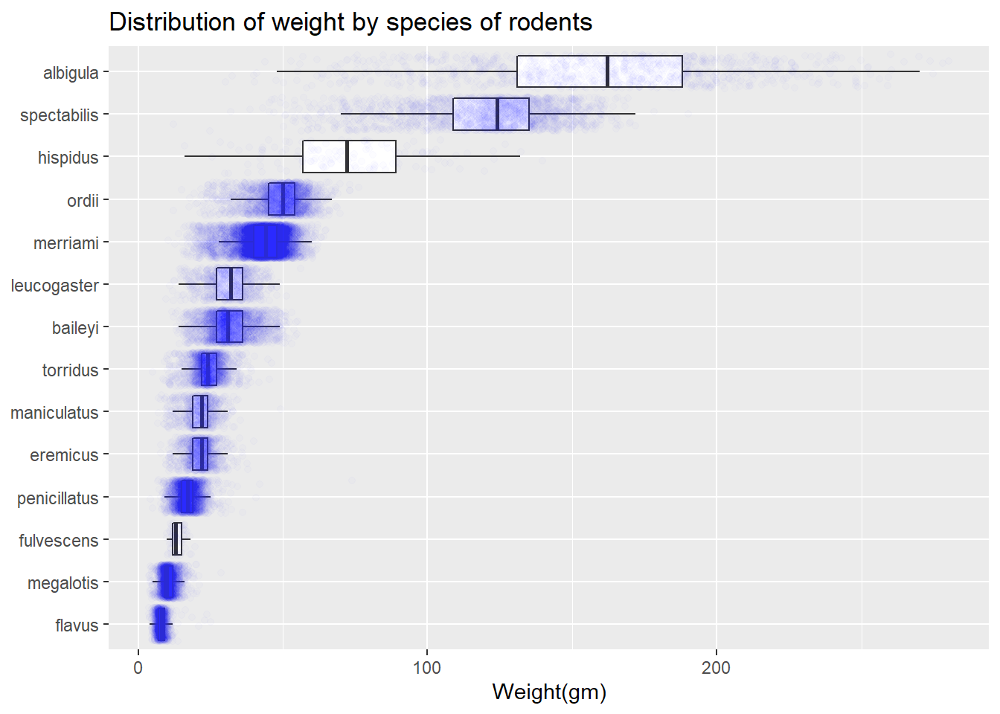
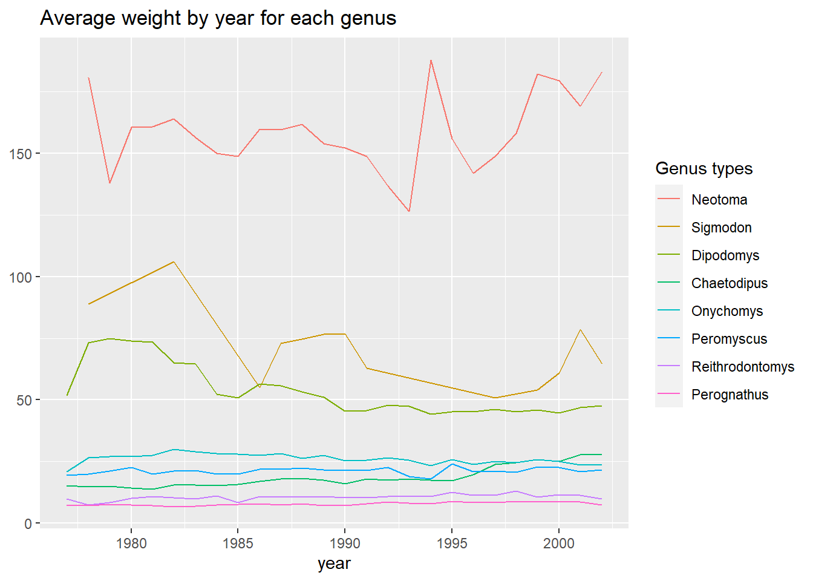
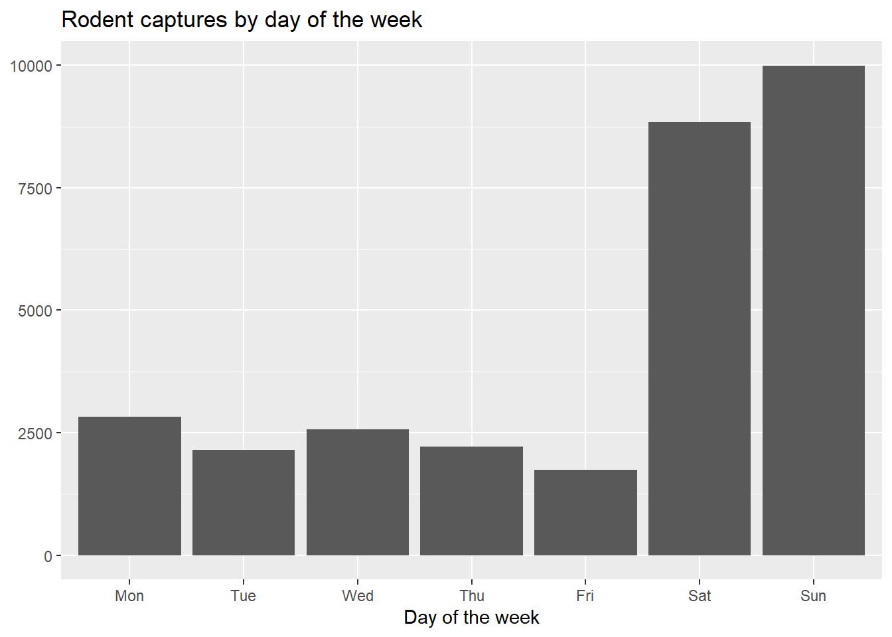
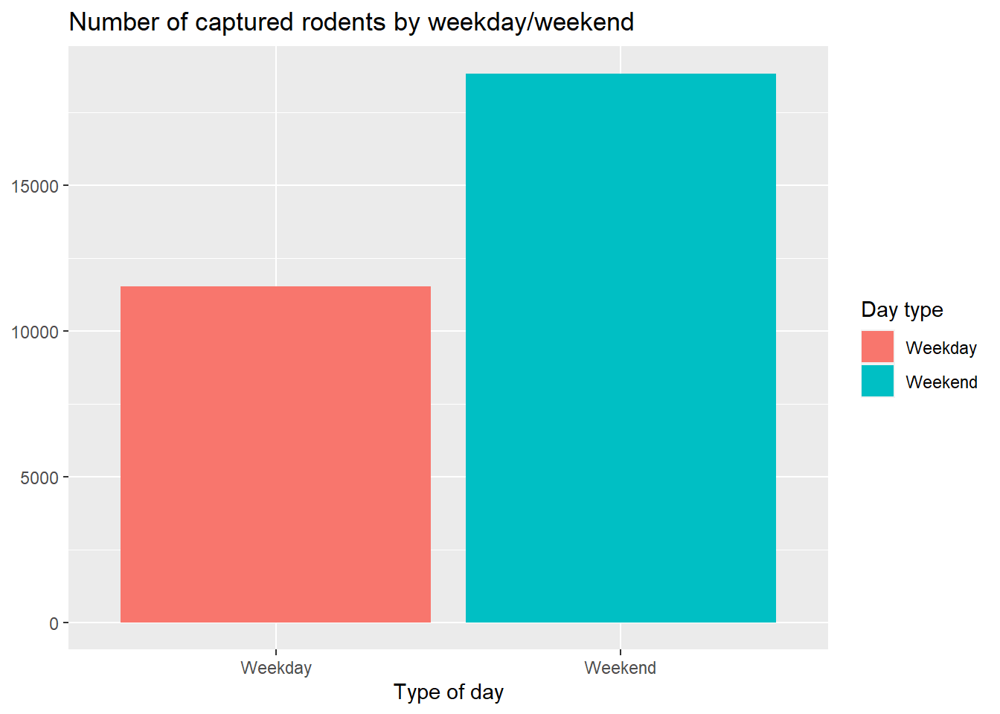

Code
library(tidyverse)
library(here)library(tidyverse)
library(here)# Code for question 1!
surveys <- read_csv(here::here("supporting_artifacts", "Lab5", "surveys.csv")) surveys <- drop_na(surveys)ggplot(data = surveys, mapping = aes(x = weight, y = fct_reorder(species, weight, .desc = FALSE))) +
geom_boxplot(outlier.shape = NA) +
geom_jitter(color = "blue", alpha= 0.01) +
labs(title = "Distribution of weight by species of rodents", x = "Weight(gm)", y = "Species") +
theme(axis.title.y = element_blank())
Function for y axis label: https://www.tutorialspoint.com/how-to-change-the-y-axis-title-to-horizontal-using-ggplot2-in-r
surveys |>
group_by(genus, year) |>
summarize(avg_weight = mean(weight)) |>
ggplot(mapping = aes(x = year, y = avg_weight, color = fct_reorder2(genus, year, avg_weight))) +
geom_line() +
labs(title = "Average weight by year for each genus", xlab = "Year",
color= "Genus types") +
theme(axis.title.y = element_blank())
surveys |>
group_by(day_of_week) |>
count(day_of_week) |>
ggplot(mapping = aes(x = factor(day_of_week, levels = c("Mon", "Tue", "Wed", "Thu", "Fri", "Sat", "Sun")), y = n)) +
geom_col() +
labs(title = "Rodent captures by day of the week", x = "Day of the week")+
theme(axis.title.y = element_blank())
surveys |>
mutate(weekday_collapse = fct_collapse(day_of_week, Weekday = c("Mon", "Tue", "Wed", "Thu", "Fri"), Weekend = c("Sat", "Sun"))) |>
ggplot(mapping = aes(x = weekday_collapse, fill = weekday_collapse)) +
geom_bar() +
labs(title = "Number of captured rodents by weekday/weekend", x = "Type of day", fill = "Day type") +
theme(axis.title.y = element_blank())